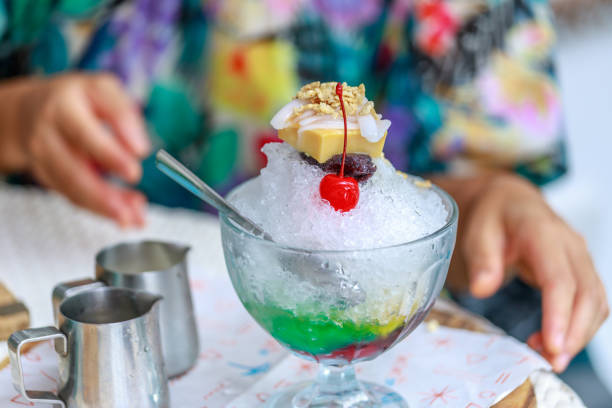

Halo-Halo
Halo-Halo is a popular Filipino dessert that consists of crushed ice, mixed fruits, jellies, sweet beans, and topped with leche flan and ube ice cream. It's a delightful treat, especially during hot weather!
Ingredients
- 2 cups crushed ice
- 1/4 cup sweetened banana, sliced
- 1/4 cup sweetened jackfruit, sliced
- 1/4 cup sweetened red beans (or kidney beans)
- 1/4 cup sweetened mung beans
- 1/4 cup jellies (e.g., gelatin cubes or agar-agar)
- 1/4 cup macapuno (sweetened coconut sport)
- 1/4 cup leche flan (caramel custard)
- 1/2 cup ube ice cream (purple yam ice cream)
- 1/4 cup evaporated milk (optional)
Instructions
- Prepare the Ingredients: Gather all the ingredients and prepare them by cutting fruits and jellies into bite-sized pieces.
- Layer the Ingredients: In a tall glass or bowl, start layering the ingredients. Begin with the sweetened banana, jackfruit, red beans, mung beans, and jellies.
- Add Crushed Ice: Top the layered ingredients with crushed ice, filling the glass to the top.
- Top with Leche Flan: Add slices of leche flan on top of the crushed ice.
- Finish with Ice Cream: Add a generous scoop of ube ice cream on top.
- Drizzle with Milk: If desired, drizzle evaporated milk over the top before serving.
- Serve: Serve immediately with a spoon and straw. Mix everything together before eating for the best experience!
Tips
- Feel free to customize the ingredients based on your preference. Other popular toppings include corn, fruits, and nuts.
- Using homemade leche flan adds an extra special touch!
- Serve in large glasses for sharing or individual servings for everyone!